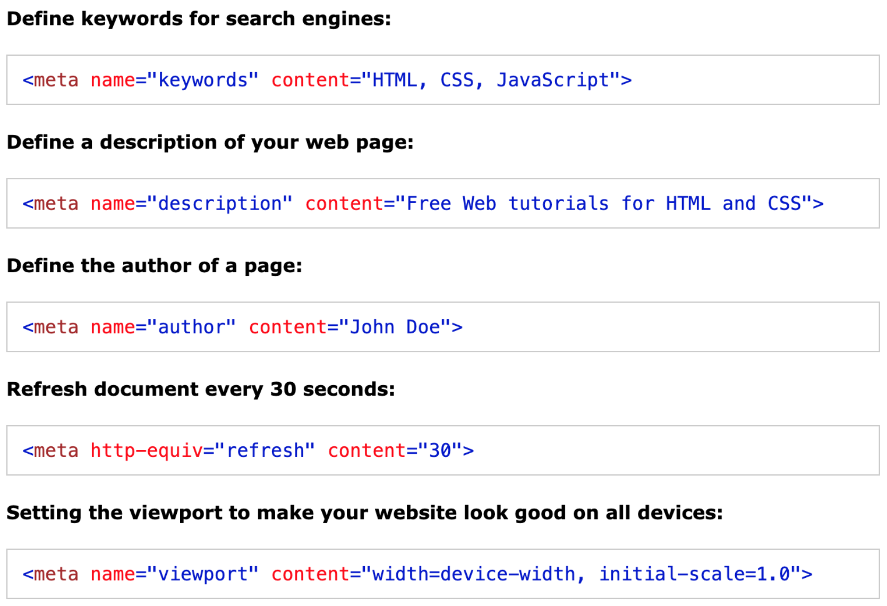
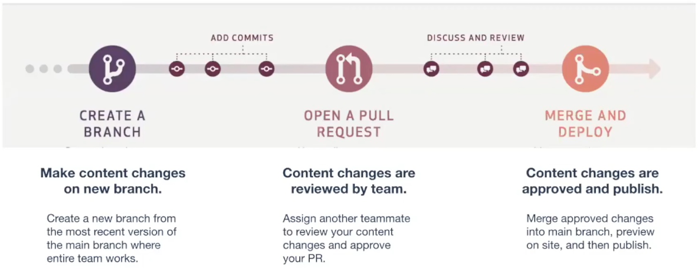

HTML
-
HTML
- <head> -> contains metadata the browser uses
- <body> -> contains content for the user to see and interact with
-
Semantic HTML element: name of the element describes the content and role it plays on webpage
- Easier for developers, search engines, and accessibility tools to read
- <header> -> top of page content, like navigation menu or intro content
- <main> -> main page content
- <section> -> define a section of the content that follows a theme
- <footer> -> bottom of page content, like author, copyright, contact, sitemap, and navigation
-
Pre-Head Elements
- <!DOCTYPE HTML> -> declares to web browser that HTML is contained in the file
-
<html> -> contains all HTML elements
-
Attributes:
- lang -> determines language of webpage (ex: lang=”en”)
-
Head Elements
-
<title> -> determines title of webpage (shows up on tab view)
- <style> -> defines CSS styles on webpage
- <script> -> embeds client-side scripts in HTML doc
- <base> -> defines the base URL for a webpage
- <link> -> connects external resource to HTML doc
-
<meta> -> defines metadata (ex: character set, description, keywords, author, viewport)
-
Attributes:
-
charset -> specifies character encoding for the HTML doc
- <meta charset="UTF-8"> -> the most popular character encoding
- http-equiv -> sets an HTTP header for content
- viewport -> sets default view for webpage
- name -> specifies type of metadata
 tag examples" width="400px">
-
Body Elements
- <h1> <h2> <h3> <h4> <h5> <h6> -> heading text (largest to smallest)
- <p> -> paragraph text
- <ul> -> unordered list, bullet points (by default)
- <ol> -> ordered list, numbered
- <li> -> list item, put one for each item in an <ul> or <ol>
-
<img> -> image
-
Attributes:
- src -> specifies source/location of image
- alt -> contains text describing the image (good for accessibility and SEO)
- <br/> -> creates a line break
-
<a> -> creates a hyperlink to specified href
-
Attributes:
- href -> specifies the URL anchor will go to
Git
-
Overview
- Version control is the practice of recording changes in our code.
- Git is the most popular version control system. To use it in the command line, begin every Git command with git.
- Here is handy Git command cheat sheet.
- GitHub is a popular cloud-based hosting system that keeps track of changes in code and allows for team collaboration.
- Here is a video to introduce GitHub.
-
SHA
- Every time we save a version of our work using version control, it is assigned a unique identifier called an SHA, or hash, that allows you to keep a record of the specific changes committed. This unique identifier provides a reference to that specific version of code so we can retrieve it as needed.
- SHA is a super long string of letters and numbers, but developers only really need to give computers the first 7 characters of a SHA to recognize it.
-
To revert to a previous version we call use git revert along with the SHA of the version we want to revert to. For example:
-
GitHub Lingo
- Repository: container for files in a project
- Local Environment: workspace where work is done on local computer
- Branch: workspace where you can safely make changes. Does not affect main branch or live site.
- Markdown: way to write for the web using plain text. Is a .md file.
- Fetch: get most updated version of branch from cloud onto local environment.
- Commit: saving a new version of a file you're working on (ex: edit, add, delete). Changes the working brach as well.
- Push: updates branch on the cloud with committed changes.
- Pull Request (PR): asking for changes on your brach to be merged ("pulled into") another branch. Can assign team members to review/approve PR.
- Merge: when a pull request (PR) is approved.
- Issue: way to report new tasks or bugs. Tracked on Project Board.
-
GitHub Workflow

- Main branch: the final, most updated version of the code
- Feature (working) branch: holds code for developing a single feature
- Develop branch: holds multiple feature branches
-
Common Git Commands
- git status : show modified files in working directory, staged for your next commi.
- git checkout -b branch-name : creates new branch with branch-name and switches to it
- git add -A : stage all file changes for commit
- git commit -m "my message" : commits staged files in working branch along with adding the written message
-
git pull origin branch-name : syncs up any changes from the branch-name branch, pulling them onto your working branch
- pull = receive a branch's modifications into the local environment
- origin = indicates the source of the pull will be in the GitHub repository
JavaScript
- JavaScript notes pending...